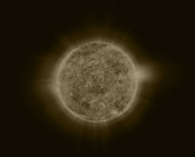

Учёные за два года подготовят обезьян к
полёту в дальний космос. Для этого отобрали
четыре примата вида маками-резус.
Роскосмос рассказал о намерении в
будущем отправить на Марс обезьян. В настоящее
время запущена программа по подготовке
приматов. Специалисты Института
медико-биологических проблем
разрабатывают необходимые
навыки у четырёх животных, которых
планируют запустить в дальний космос. По
предварительным расчетам обезьян будут
тренировать в течении двух лет. По словам
представителя института Инессы
Козловской, приматов научат спокойно
сидеть и выполнять все необходимые
действия при первой подаче команды.
Уточняется, что для участия в программе
были допущены только животные вида
маками-резус, которые в настоящее
время являются самыми
интеллектуально развитыми из
обезьяньего вида. Отобранные, для
предстоящего полёта, приматы были
выращены в специализированном
питомнике и выбраны как самые «умные» из всех.
Одну из обезьян научат быть «капитаном». Она
будет управлять главным джойстиком, и каждый раз
попадая курсором в необходимую цель,
получать награду. Сейчас
исследователи
отмечают, что самый талантливый примат — это
Клёпа. Он уже научился решать простые задачки в
управлении корабля, и умело
ориентируется в компьютерных
программах. Скорее всего, именно он и станет
«управляющим». Отправка приматов в
космическое пространство необходимо
учёным для того, чтобы понять то, как влияет
невесомость на человеческое тело. В
прошлом, с помощью такого метода была
найдена разгадка того, почему в первые
дни пребывания в невесомости у
космонавтов начинается морская
болезнь...
Продолжение на стр. 5
Цитата дня: |
RosCosmos News |
Погода: |
|---|
«Роскосмос» отправит обезьян на Марс
«Роскосмос» наведет порядок
На создание нового космического аппарата, предназначенного для очистки геостационарной орбиты от нефункционирующих спутников и разгонных блоков Роскосмос просит 10,8 миллиарда рублей. Об этом сообщается в проекте Федеральной космической программы (ФКП) на 2016-2025 годы, который агентство направило в правительство России на согласование.
«Роскосмос» озвучил планы по изучению Солнца в 2025 году
В планы «Роскосмоса»
входит разработка космического
аппарата, который будет запущен к концу
2025 года для изучения Солнца, а именно его короны
и переходного слоя. Об этом сообщили
сотрудники корпорации. Для начала
организация должна согласовать свои планы
с правительством России, для этого она
разместила запрос на портале госзакупок.
В документе указано, что работать над
проектом начнут сразу же после заключения
государственного контракта, а закончат
осенью 2025 года.
Главной задачей
«Роскосмоса» является создание
космического аппарата, который
сможет делать снимки короны и переходного
слоя Солнца. Эти фотографии будут отличаться
крайне большим разрешением, которое до
этого было невозможно достигнуть из-за
большого расстояния между Землей и главным
светилом. К слову сказать, пять лет назад НАСА
запустило Обсерваторию солнечной
динамики, непрерывно наблюдающую за
Солнцем и делающую фотографии...
Продолжение на стр. 7
Млечный Путь столкнется с галактикой Андромеды.
Столкновение с Андромедой приведет к
образованию единой галактики.
 Этот процесс неизбежен,
считают российские ученые, поскольку
галактики движутся навстречу друг другу...
Продолжение на стр. 8
Этот процесс неизбежен,
считают российские ученые, поскольку
галактики движутся навстречу друг другу...
Продолжение на стр. 8